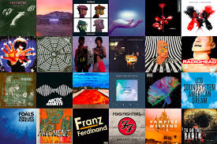
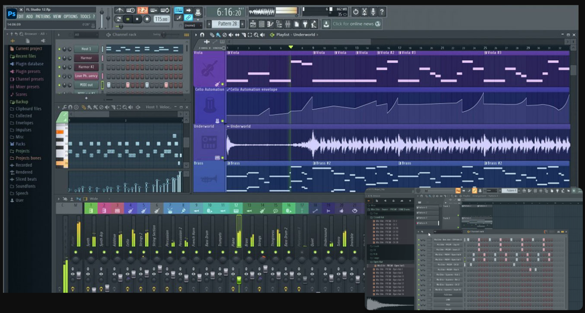

Learn production methods for creating Pop, Alternative, Hip-Hop, and more.
This is our streak system. You will complete short daily challenges that are separate from our lessons in order to build consistency.
Set your own time limit going up to 45 minutes per day so that you don’t do too much too fast.
Watch lessons on your phone or on your computer using picture-in-picture while producing in FL Studio.
The first 6 months are free for producers who have already purchased FL Studio.

